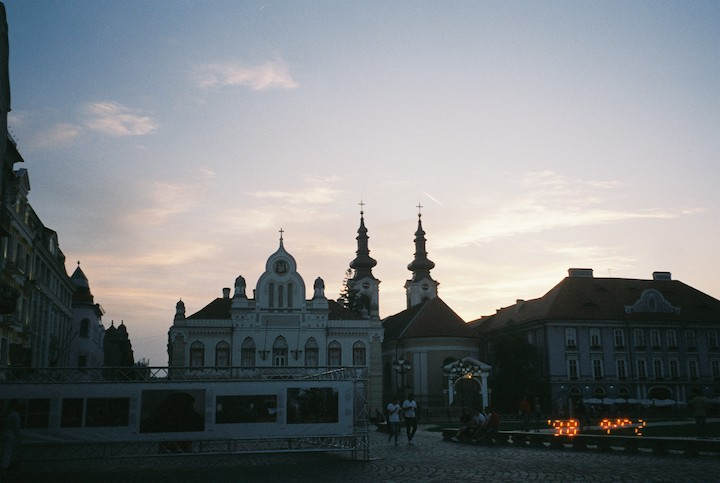

Come to connect with others, socialize and see different places around the world through film pictures.
Why will people come to your site? On my website you will find my film photography journey that tries to bring out the beauty that's in front of us every day. Capturing ordinary life, events and experiences that might go unnoticed until further discovered later on after the development of film is complete. As a photographer I try to stop and observe things that might go unnoticed, textures, nature, light, expressions & surroundings. “ Photography is a way of feeling, of touching, of loving. What you have caught on film is captured forever... it remembers little things, long after you have forgotten everything. “ - Aaron Siskind
What is Film Photography? “ Film photography is where it all began. Before the birth of digital photography, we all took photographs on strips of plastic with layers of emulsion. Further back from that, we used glass and metal sheets which played both the role of light carrier and print. These strips come with a coating of a silver halide solution, protected by a layer of gelatin. The photographs we took burned an imprint into the silver. To get a negative out of this, chemicals and washes stripped the plastic of all its coating. This reveals a reversed image. Dark areas of the scene would show up as transparent on the negative. The grain or 'noise' we see from higher ISOs come from the size of the silver pieces. The bigger the pieces, the better they were at capturing light but that also meant they were big enough to see. Film photography is all about having a physical element with the possibility of experimentation. It relies on the process of conscious image-making because you have a limited number of frames. It is also time-consuming due to the developing and scanning process. These days, film photography is making a huge comeback. There are plenty of reasons why you should shoot film. There are a lot of online communities, collectives and groups on social media. You can even find hashtags like #filmisnotdead where people are aiming to bring film photography back to life.
" Why will people come to your site? On my website you will find my film photography journey that tries to bring out the beauty that's in front of us every day. Capturing ordinary life, events and experiences that might go unnoticed until further discovered later on after the development of film is complete. As a photographer I try to stop and observe things that might go unnoticed, textures, nature, light, expressions & surroundings. “ Photography is a way of feeling, of touching, of loving. What you have caught on film is captured forever... it remembers little things, long after you have forgotten everything. “ - Aaron Siskind

Site planContactInstagram